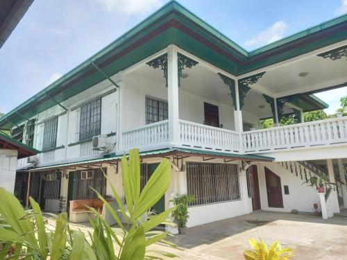
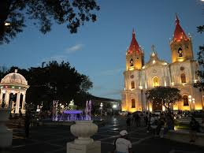
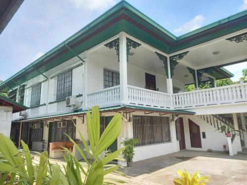
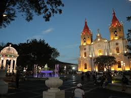

Tour Highlights
Explore iconic landmarks, ancestral houses, and historic museums while indulging in Iloilo’s famous delicacies—from fresh batchoy and pancit Molo to classic pasalubong treats like butterscotch, barquillos, and bibingka. The tour combines cultural immersion with food sampling, heritage walks, and local shopping, giving you an authentic Ilonggo experience before ending with drop-off at the hotel or airport.
Itinerary:
DAY 1 ILOILO CITY & MUSEUMS TOUR W/ SNACKS
MORNING & LUNCH PERSONAL GROUP APPOINTMENTS
1:45 PM MEET THE GUIDE AFTER LUNCH
2:00 PM DEPART BREAKTHROUGH
START OF ILOILO CITY TOUR
PANADERIA DE MOLO, AN INSTITUTION WHEN IT COMES TO BAKED GOODIES.
(visit for pasalubong shopping)
CALLE REAL / CASA REAL
2:30 MUSUEMS: LENGTH OF STAY MAY VARY ON INTEREST AND WEATHER
MUSEUM OF PHILIPPINE ECONOMIC HISTORY
MUSEUM OF PHILIPPINE MARITIME HISTORY
NATIONAL MUSEUM WESTERN VISAYAS
DROP OFF SEDA HOTEL / END OF DAY 1
DINNER PERSONAL GROUP APPOINTMENT
DAY 2 ILOILO HERITAGE TOUR & FOOD SAMPLINGS (L/S)
9:00 AM ASSEMBLY / PICK UP FROM SEDA HOTEL
START OF ILOILO HERITAGE TOUR
JARO CATHEDRAL & BELFRY
SNACKS ON THE BUS: BUTTERSCOTCH / BARQUILLOS
VISIT CASA MARIQUIT
ANCESTRAL HOUSES OF JARO
CASA TENTAY FOR A PISS STOP/KIDNEY BREAK
11:30 LUNCH AT ALICIA’S (YOU CAN SEE HOW THEY MAKE BATCHOY IN THEIR JARO BRANCH)
ILOILO ESPLANADE VIA MEGAWORLD
TSOKOLATE AT AVANCENA BALAY NA BATO
BIBINGKA SANG MOJON, A MUST-TRY!
MOLO CHURCH / MOLO PLAZA / MOLO MANSION
PASALUBONG: KAP ISING’S PANCIT MOLO
TRY SOME GOOD OLD JO-ANN’S FISH BALLS
4:00 PM BALAI ILONGGO FOR PASALUBONG SHOPPING
(SMEs FROM DIFFERENT TOWNS AND MUNICIPALITUIES – HABLON, BAGS, KAKANIN )
ILOMOCA (ILOILO MUSEUM OF CONTEMPORARY ARTS)
DROP OFF SEDA HOTEL OR AIRPORT / END OF TOUR